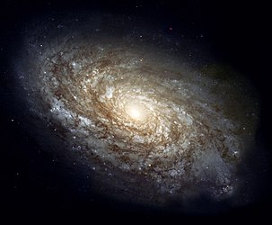
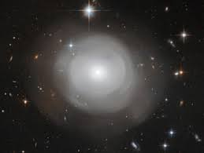
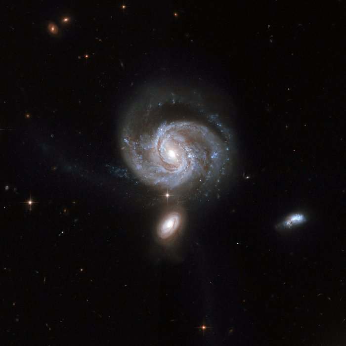
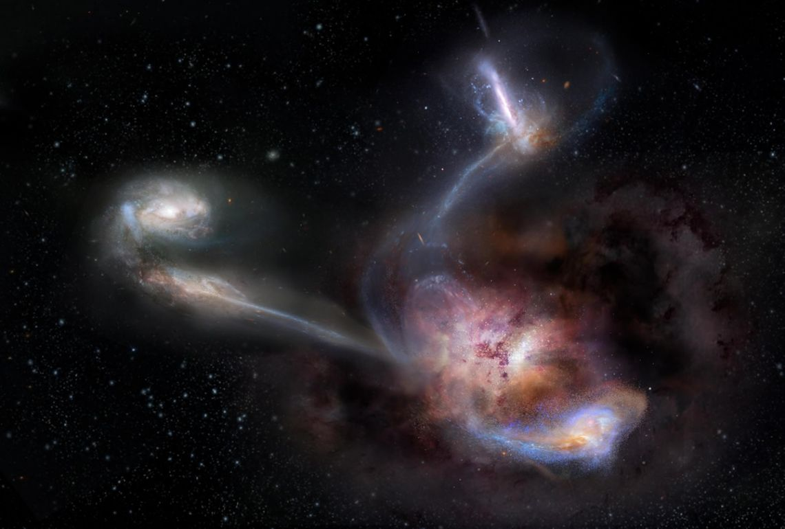
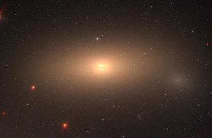

Una galaxia es un conjunto de estrellas,
nubes de gas, planetas, polvo cosmico, materia oscura y energia
unidas gravitatoriamente en una estructura mas o menos
definida.
las galaxias se han clasificado de acuerdo a su forma aparente.
Una forma comun es la galaxia eliptica que, como lo indica su nombre, tiene el perfil luminoso de una elipse.
Las galaxias espirales tienen forma circular pero con estructura de brazos curvos envueltos en polvo.
Las galaxias inusuales se llaman galaxias irregulares y son, normalmente, el resultado de perturbaciones
provocadas por la atraccion gravitacional de galaxias vecinas.

La fotografia de esta inusual galaxia fue tomada por el telescopio espacial Hubble, esta rodeada por
numerosas
capas decumulos de estrellas que asemejan a petalos de rosa.
Estos datos pueden indicar que PGC 42871
ha estado en al menos dos colisiones galacticas y al menos una de las cuales podria haber
sido con una antigua galaxia espiral.
La extencion de PGC 42871 es de unos 20 mil años luz y se encuentra a unos
270 millones de años luz
de distancia hacia la constelacion de Centaurus.

La imagen de esta galaxia tambien fue tomada por el telescopio espacial Hubble.
La galaxia tiene dos brazos espirales que se ensanchan a medida que aumenta la distancia, se ve casi de frente
con una inclinacion de 31 grados, tiene un nucleo activo poderoso del tipo conocido como Seyfert tipo 2 y este pareciera que es
alimentado por una galaxia cercana que se encuetra en la parte inferior.
Se encuentra en la constelacion de Pegaso,
el Caballo Alado, a unos 400 millones de años luz de la Tierra y tiene unos 125.000 años luz de diametro.

Fue descubierta por la sonda WISE en el 2015 y es considerada la galaxia mas luminosa de universo.
Su brillo es aproximadamente 300 billones de veces superior al del Sol, este se debe a
un disco de gas diminuto pero increiblemente energetico que
se sobrecalienta a medida que cae en espiral hacia el agujero negro supermasivo.
En la imagen es aparente que la galaxia se estan fucionando con otras dos galaxias cercanas a el.

A esta galaxia se le considera una reliquia ya que
esta intacta desde el comienzo del universo.
Esta compuesta solo por los cumulos globulares rojos que se crearon con ella,
y desde entonces se conserva inalterada.
Esta reliquia es una galaxia lenticular localizada en la constelacion de Perseo. Esta
situada a aproximadamente 220 millones de años luz de distancia de la Via Lactea.
El agujero negro situado en el centro de esta galaxia es uno de los mas grandes conocidos.
La imagen fue tomada por el telescopio espacial Hubble.
NASA (29 Octubre, 2018). science.nasa: Shells of Stars in Elliptical Galaxy PGC 42871
science.nasa.gov/shells-stars-elliptical-galaxy-pgc-42871
ESA(24 Abril,2008). NGC 7674. spacetelescope. spacetelescope.org/images/heic0810bp/.
NASA en español (16 noviembre,2018).La Galaxia Mas Luminosa se Esta Comiendo a sus Vecinos.
lanasa.net/universo/eso/la-galaxia-mas-luminosa -se-esta-comiendo-sus-vecinos
eitb.eus (14 marzo,2018). Localizan una galaxia intacta desde el comienzo del universo
eitb.eus/es/noticias/tecnologia/detalle/5463684/galaxia-intacta-comienzo-universo-ngc-1277/